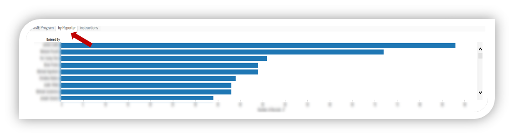
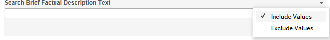
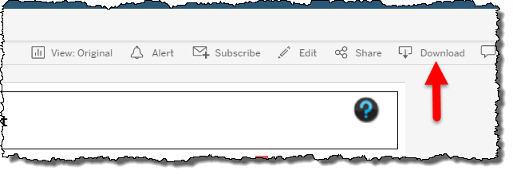
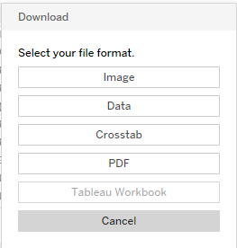
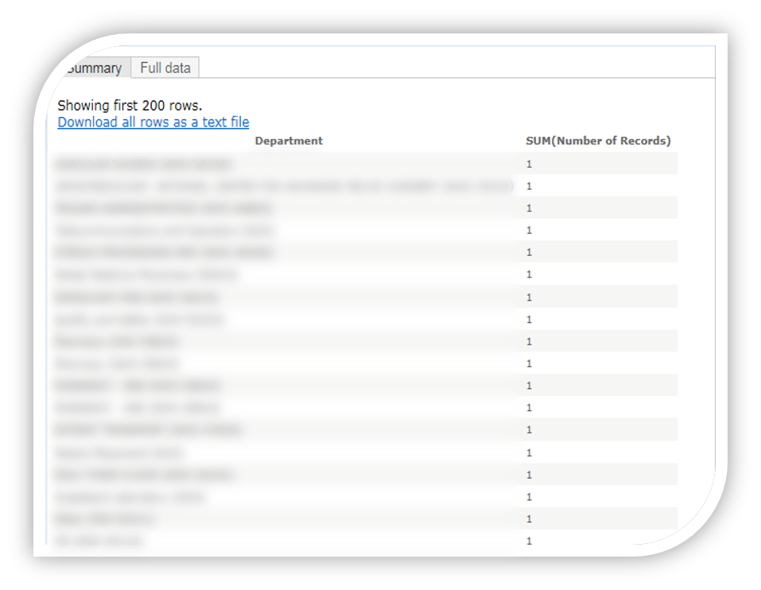

The Resident PSE Reporting dashboard aides Program Directors, Assoicate Program Directors and Residents in facilitating conversations about PSE reporting trends within GME programs. This interactive tool displays location, date, severity, and type of events reported as well as outcomes and actions taken by file managers reviewing the report. Encouraging regular reporting among residents creates more robust data for discussion, generation of QI projects, and monitoring outcomes.
Data is automatically populated from the Patient Safety Event Management System (PSEMS) on a weekly basis. At the time of the update, new events and file resolutions are added to the interactive fields. Because of this lag, there may have been actions taken that are not reflected in the dashboard field when reviewed throughout the week.
Data entered into the PSEMS is subjective based on the submitter’s (i.e. resident’s) understanding of the event. For this reason, some elements of the report (and trends on the Dashboard) may change between reviews. For instance, the reported event severity may not reflect the actual event severity based on a fuller understanding after a review is performed.
Further, residents may enter a “Site” and “Department” that does not match to their specific GME program (e.g., a Family Medicine resident on a NICU rotation will list the NICU as the event location and may indicate Pediatrics as the GME Program).
A separate tab within the dashboard displays reporting trends by resident. Please note that some residents listed may have graduated. This field is searchable and can be displayed for a defined period of time.
Enter text of interest to search PSE submitted narratives (e.g. “Heparin”, “handoff”, or “NG tube”). Values can be included or excluded with the associated drop down.
To download PDF versions of the reports, click “Download” from the upper-right of the screen, then select the file type (example shows “Data”)
 Click “Summary or Full Date” and “Download all rows as a text file” to export to Excel
